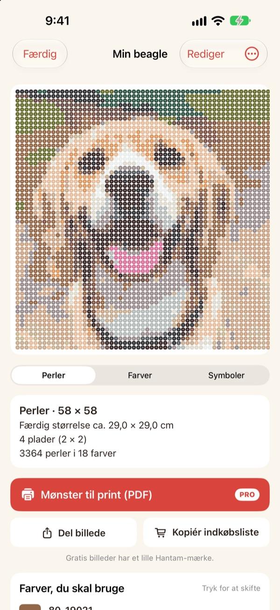
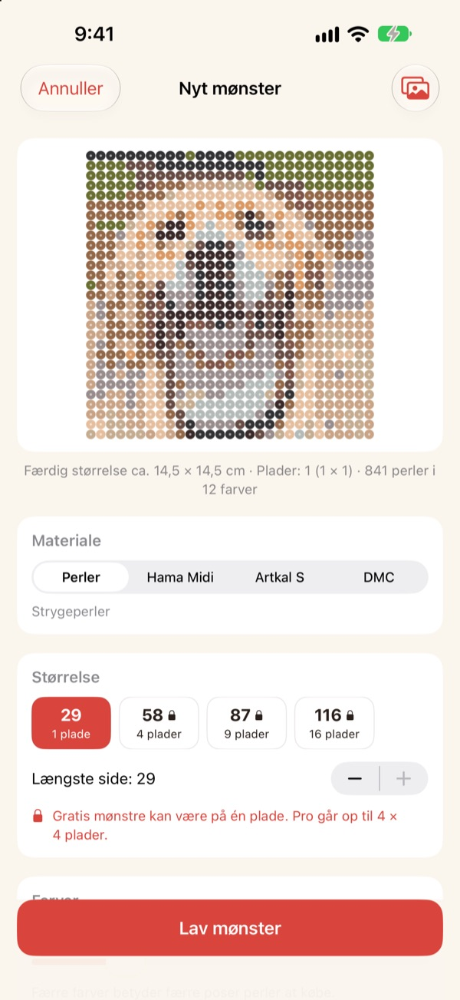
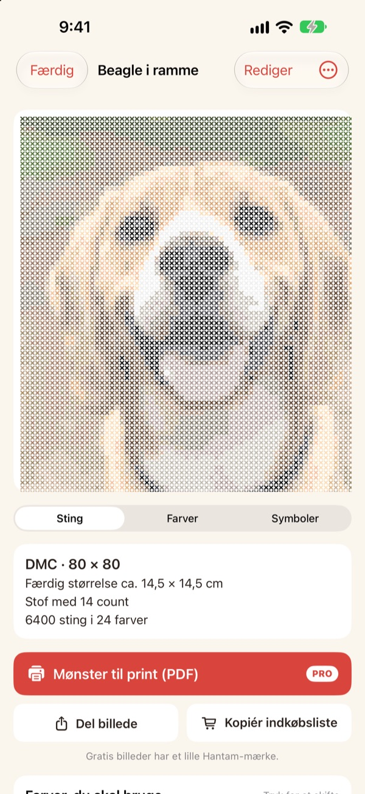
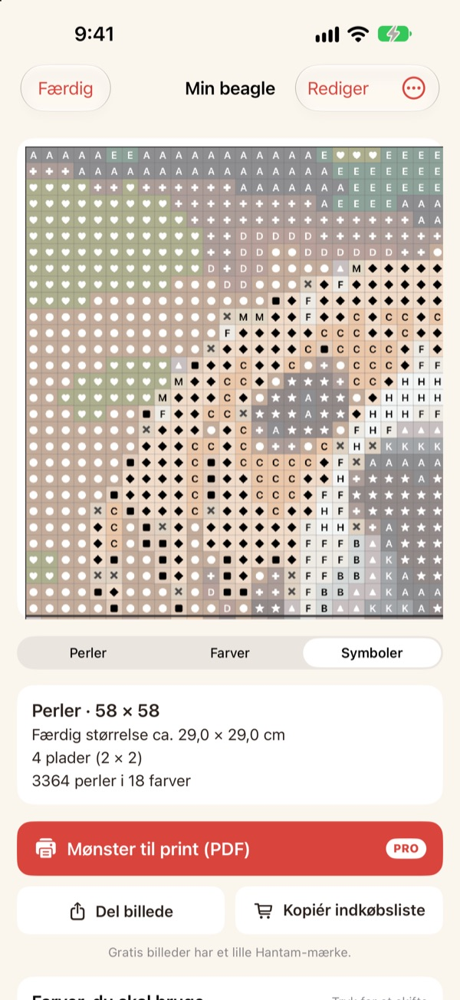
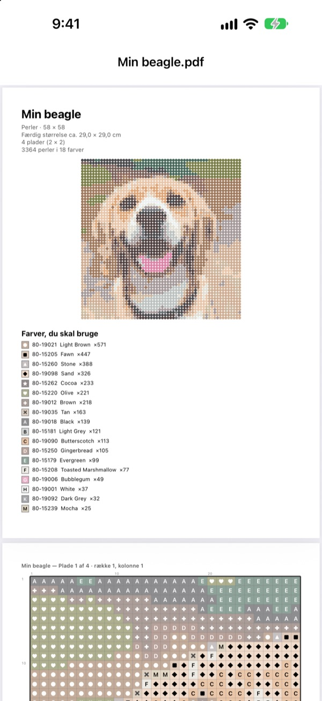

Et foto
bliver til et mønster
Vælg et foto af dit kæledyr, dig selv eller din yndlingsfigur. Hantam laver det om til et mønster til strygeperler eller korssting i farver, du kan købe.
Gratis til mønstre på én perleplade. Dine fotos forlader aldrig din iPhone.

Prøv det på et foto
Det er den samme farvematchning som i appen, med Perlers rigtige farvekort. Skift størrelse og antal farver, eller prøv med dit eget foto.
Et mønster er let. At ramme rigtige perlefarver er svært
Pixelerer du et foto i et almindeligt redigeringsprogram, får du farver, som ingen perle eller garn findes i. Så skal du gætte, hvilken bøtte hvert felt hører til, og tælle, hvor mange af hver du skal købe. Hantam vælger kun mellem farver, der faktisk sælges, og fortæller præcis, hvor mange du skal bruge.
Rigtige farver, rigtige numre
Vælg perler fra Perler, Hama Midi eller Artkal S, eller DMC-garn. Hvert felt får en farve, mærket rent faktisk sælger, med farvenummer.
Du bestemmer størrelse og antal farver. Store mønstre deles op i perleplader på 29 × 29.

Også korssting
Vælg DMC-garn, så bliver det samme foto til et korsstingsmønster. Vælg Aida-stof med 11, 14, 16 eller 18 tråde, og Hantam viser den færdige størrelse og antal sting for hver farve.

Du ved præcis, hvad du skal købe
Skift til symbolmønsteret og følg det felt for felt, med tykke streger ved hver pladekant eller for hvert 10. sting. Se, hvor mange perler hver farve kræver, og brug Kopiér indkøbsliste med ét tryk.
Tryk på et felt for at ændre det, eller skift én farve ud med en anden overalt.

Print og gå i gang
Med Pro eksporterer du et Mønster til print (PDF): først farvelisten, derefter symbolmønstre side for side, én perleplade ad gangen.

Tre trin til dit mønster
- 1
Vælg et foto
Kæledyr, ansigter, logoer og figurer virker alle. Fotos med et tydeligt motiv bliver bedst.
- 2
Vælg perler eller garn
Vælg mærke, størrelse og antal farver.
- 3
Gå i gang
Følg mønsteret på skærmen, eller print det med Pro.
Materialer og størrelser
- Perler · Hama Midi · Artkal S
- Strygeperler, perleplader på 29 × 29, hver perle ca. 5 mm
- DMC
- Korsstingsgarn på Aida med 11, 14, 16 eller 18 tråde
- Gratis
- Perler op til 1 plade (29 felter), garn op til 40 sting på den længste side
- Pro
- Perler op til 4 × 4 plader (116 felter), garn op til 200 sting
- Farver
- Fra 2 til 50 pr. mønster
Perler, Hama, Artkal og DMC er varemærker tilhørende deres respektive ejere. Hantam har ingen tilknytning til dem. Farver på skærmen kan se lidt anderledes ud end i virkeligheden.
Start gratis. Pro til store mønstre og print.
Gratis
- Mønstre op til én perleplade eller 40 sting
- Alle mærker: Perler, Hama, Artkal og DMC
- Antal pr. farve, indkøbsliste og farveskift
- Op til 3 gemte mønstre
- Del billeder med et lille Hantam-mærke
Hantam Pro
- PDF-mønstre til print
- Op til 4 × 4 perleplader eller 200 sting
- Ubegrænset antal gemte mønstre
- Billeder uden mærke
- Alle pixel art-værktøjer
Måneds- eller årsabonnement, eller ét køb for altid
Du kan også give Pro i gave til en ven direkte fra appen.
Spørgsmål og svar
Bliver mine fotos uploadet?
Nej. Fotos og mønstre behandles og gemmes kun på din iPhone.
Farverne ser lidt anderledes ud end mine perler.
Skærme viser farver anderledes end plastik og garn. Tryk på en farve i listen for at skifte den ud med en tættere farve fra samme mærke.
Hvor stort kan et mønster blive?
Gratis fylder det én perleplade på 29 × 29 eller 40 sting på den længste side. Med Pro op til 4 × 4 plader (116 perler) eller 200 sting.
Hvilke fotos bliver bedst?
Fotos med ét motiv og en enkel baggrund. Jo færre farver, jo renere mønster, så sænk antallet af farver, hvis resultatet ser uroligt ud.
Kan jeg stadig lave pixel art?
Ja. Pixelering af fotos, tegning efter 110 forlæg og billede-for-billede-animation er der stadig. Alle pixel art-værktøjer er med i Pro.
Hvordan gendanner jeg mit køb?
Åbn indstillinger i appen og tryk på Gendan køb. Brug den samme Apple-konto, som du købte Pro med.
Hvordan opsiger jeg abonnementet?
Gå til Indstillinger på iPhone › dit navn › Abonnementer, og vælg Hantam. Livstidsadgang er en engangsbetaling og fornyes aldrig.
Hvordan melder jeg en fejl eller foreslår en idé?
Det hurtigste er at sende feedback fra appens indstillinger. Du kan også skrive til adressen nedenfor eller sende en DM på Instagram (@lee25_ios).
Spørgsmål, fejl og idéer er velkomne på leeo@kakao.com.